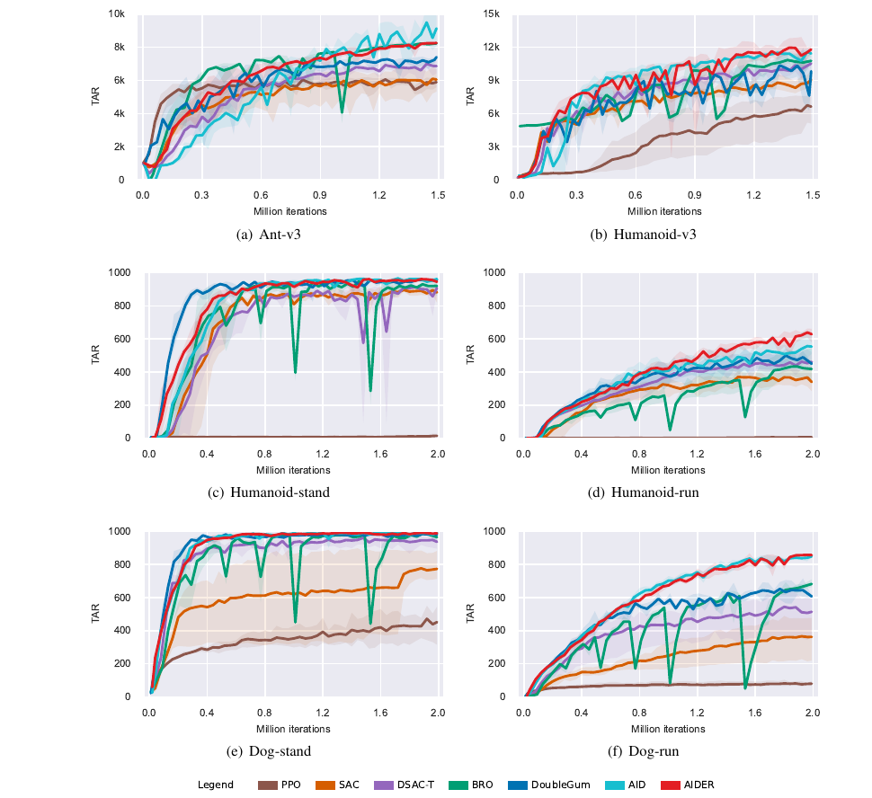
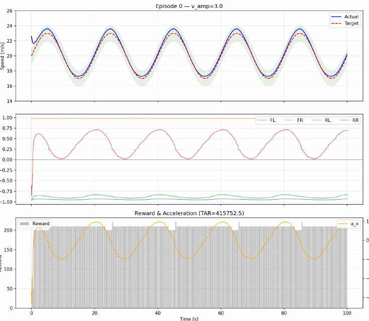

AIDER: Taming Aleatoric Impulse in Off-Policy Reinforcement Learning
Overview
Off-policy reinforcement learning can suffer from a transient surge in value overestimation during early training. AIDER addresses this with Direct Evidential Regression (DEAR), which uses an EMA anchor to learn aleatoric value uncertainty directly, then combines it with epistemic uncertainty for pessimistic target evaluation and dynamic exploration.
Method
DEAR treats an estimator as a Gaussian random variable and regresses its variance against a stable EMA target, avoiding heuristic annealing. AIDER embeds this evidential head into the critic so that the learned uncertainty supplies both a lower-confidence-bound target penalty and an upper-confidence-bound exploration bonus.
Results
On dynamic DeepMind Control Suite locomotion tasks, AIDER improves over its closest predecessor, with the largest gains on unstable high-dimensional tasks such as Humanoid-run and Dog-run. On a four-wheel-drive vehicle tracking task, the learned policy follows the sinusoidal reference speed closely while producing coordinated torque commands.
{kind=link}

{kind=link}
